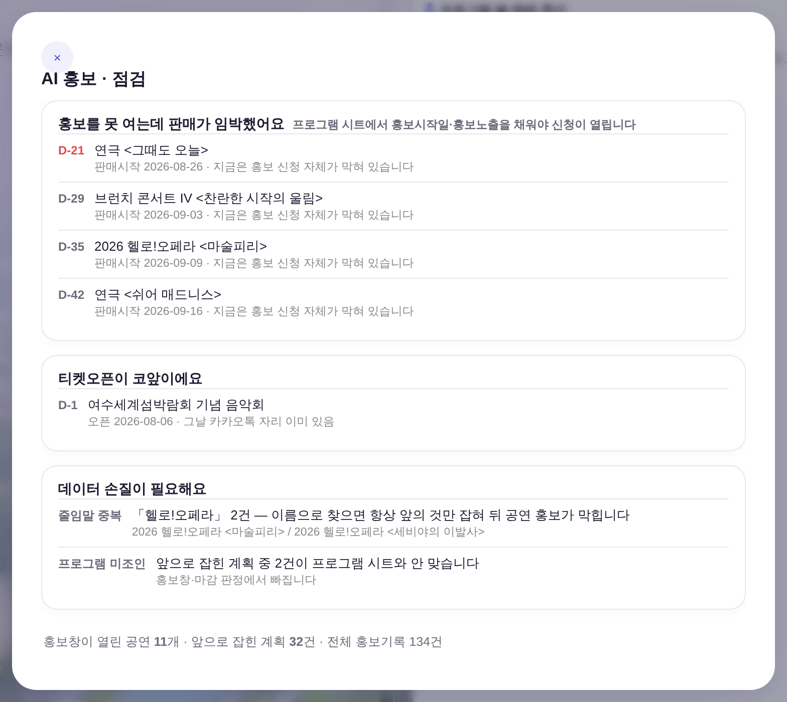
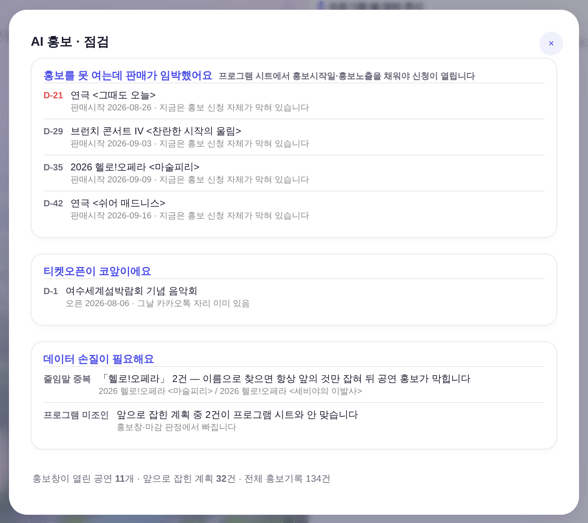

상단 대메뉴 「AI 홍보」 → openPromoCheck() 풀스크린 모달 · 운영자 지시 260805
「우측 상단에 x로 보내주고(디자인 정본따르게) / 간격 항상 일정하게 유지(지금의 +50%) / 강조색1로 타이틀」 ·
화면 = ?qa=admin 경로 + 운영자 스샷을 재현한 형태 목데이터(tools/scratch/_promo_mock.js) · 실API·실데이터·PII 미접촉 · 1440×1000.
같은 데이터·같은 뷰포트에서 잡은 두 컷.


float:right는 flex 항목에서 무효다정본 .modal-x(index.html L1126)는 float:right + margin:-8px -8px 0 0으로 우상단에 앉는다.
그런데 이 모달만 .modal에 display:flex;flex-direction:column을 얹었다 —
flex 항목에는 float가 적용되지 않는다(CSS 사양). 그래서 X는 그냥 첫 번째 세로 항목이 되어 제목 위·좌측에 쌓였다.
| 고칠 방법 | 내용 | 판정 |
|---|---|---|
.pw-modal .modal-x식좌표 하드코딩 |
position:absolute;top:28px;right:20px (L1525 전례) |
모바일에서 어긋난다 — .modal{padding:18px !important}(L418)이면 정본 자리가 11/19px인데 좌표는 28/20으로 고정 |
| X + 제목을 한 덩이(블록)로 묶기 | 묶음 <div>는 flex 항목 = BFC → 그 안에서 float가 되살아난다. 자리는 정본 계산이 그대로 낸다 |
채택 — 신규 CSS 0줄 · 정본 .modal-x 무수정 · 패딩이 바뀌는 화면도 자동으로 따라옴 |
.modal에 같은 부품을 넣고 잰 값 = 창 우변 21px · 상변 29px(32×32)
(tools/scratch/probe_modalx_canon.mjs). 후 화면이 이 값과 소수점까지 일치한다.헤드리스 실측(tools/scratch/shot_promo_check_ba.mjs) · 값은 getBoundingClientRect·getComputedStyle 원값.
| 항목 | 전 | 후 | 정본 기준 |
|---|---|---|---|
| X — 창 우변에서 | 699.0px (= 좌측 끝) | 21.0px | 21px (일반 모달 실측) |
| X — 창 상변에서 | 29.0px | 29.0px | 29px (〃) |
| 카드 ↔ 카드 간격 | 14px / 14px | 21px / 21px | 14 × 1.5 = 21 (지시) |
| 마지막 카드 ↔ 집계줄 | 14px | 21px | 카드 간격과 같은 값 |
| 카드 제목 잉크 | rgb(26,26,46) --text |
rgb(74,77,231) --accent |
강조색1 = --accent #4A4DE7 (기틀 §0①) |
| 모달 높이 | 676px | 673px | 머리줄 −32 · 간격 +21 = 실질 무변 |
tools/scratch/probe_promo_x_narrow.mjs · 가로넘침은 모달을 열기 전부터 있던 값(앱 모바일 레이아웃 선재 · 이 변경과 무관, 열어도 증가 0).
| 뷰포트 | .modal 패딩 | X — 우변 | X — 상변 | 카드 간격 | 가로넘침 (열기 전 → 후) |
|---|---|---|---|---|---|
| 1920×1080 | 28px | 21px | 29px | 21 / 21 | 0 → 0 |
| 1440×1000 | 28px | 21px | 29px | 21 / 21 | 0 → 0 |
| 1024×900 | 28px | 21px | 29px | 21 / 21 | 0 → 0 |
| 390×844 | 18px | 11px | 19px | 21 / 21 | 252 → 252 |
| 360×740 | 18px | 11px | 19px | 21 / 21 | 282 → 282 |
var(--accent) 참조. check_design.py = 통과 (index 1578/1578 무변).#4A4DE7 on #fff = 6.0:1 (WCAG AA 4.5:1 통과 · 게이트 ⑤ 기준).:root 0 — 정본 .modal / .modal-x / .bizm-card 그대로. 간격 21은 이 모달 인라인으로만 준다..bizm-card(L2298) 무접촉 — 전역 margin을 건드리면 대시보드 이젤 하단선 계약(tools/smoke_layout.mjs ①~③)이 좌·우 열 전부에서 흔들린다. npm run smoke:layout = PASS (박스 Δ0 · 흰 카드 하단 Δ0 · 흔들림 0)..modal-bg / .modal / .modal-x 조합 그대로, 마크업 한 겹만 묶었다.